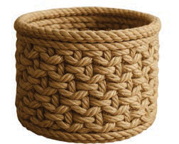
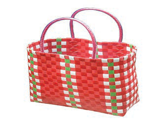

Makunzi ya kamba za nailoni au kamba za katani
Kamba za katani au nailoni ni rahisi kufuma na hutumika kutengenezea vikapu vya aina tofauti na vilivyoimara. Vielelezo namba 17 na 18 vinaonesha vikapu vilivyotengenezwa kwa makunzi ya kamba za katani na nailoni.


Hatua za kutengeneza vikapu kwa kutumia kamba za katani au nailoni
Andaa vifaa vinavyohitajika kama vile kamba za katani au kamba za nailoni, mkasi, sindano kubwa au kifaa cha kufuma;
Andaa kamba zako kwa kuzikata kulingana na ukubwa unaotaka wa kikapu;
Tengeneza msingi wa kikapu kwa kuzungusha kamba katika umbo la mduara au mstatili ili kupata msingi;
Shona kamba kwa sindano ili kushikamanisha mizunguko ya msingi;
Jenga kuta za kikapu kwa kufuma kamba kutoka kwenye msingi ukipanda juu. Hakikisha mizunguko ya kamba inashikamana vizuri kwa kutumia sindano au zana ya kufuma; na
Malizia kikapu kwa kukazia kufuma mizunguko ya mwisho ili kufanya kiwe imara.